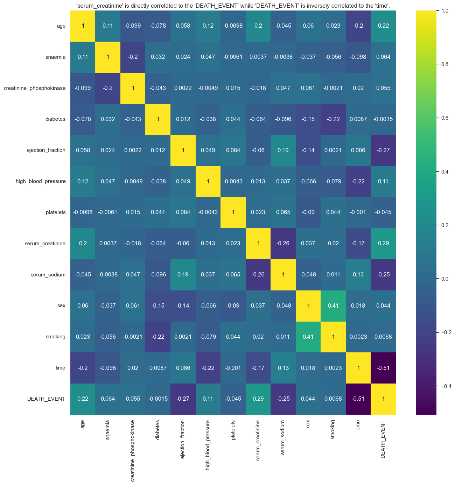

Heart Failure Prediction by Analysing Clinical Records
This project aims to analyze the factors involved in heart failure in patients and develop a model that can predict whether a patient will survive or not.
Dataset
This dataset contains the medical records of 5000 patients who had heart failure, collected during their follow-up period, where each patient profile has 13 clinical features.
Attribute Information:
age: Age of the patient (years)
anaemia: Lack of red blood cells or hemoglobin (boolean)
creatinine_phosphokinase: Level of the CPK enzyme in the blood (mcg/L)
diabetes: Whether the patient has diabetes (boolean)
ejection_fraction: Percentage of blood leaving the heart at each contraction (percentage)
high_blood_pressure: Whether the patient has hypertension (boolean)
platelets: Count of platelets in the blood (kiloplatelets/mL)
sex: Woman or man (binary)
serum_creatinine: Level of serum creatinine in the blood (mg/dL)
serum_sodium: Level of serum sodium in the blood (mEq/L)
smoking: Whether the patient smokes or not (boolean)
time: Follow-up period (days)
DEATH_EVENT: Whether the patient died during the follow-up period (boolean)
Code
### Preparing the data
#import necessary packages
from imblearn.over_sampling import SMOTE
from scipy.stats import gaussian_kde
from sklearn.cluster import KMeans
from sklearn.decomposition import PCA
from sklearn.ensemble import RandomForestClassifier
from sklearn.linear_model import LogisticRegression
from sklearn.metrics import classification_report,confusion_matrix,accuracy_score
from sklearn.model_selection import GridSearchCV,train_test_split
from sklearn.naive_bayes import GaussianNB
from sklearn.neighbors import KNeighborsClassifier
from sklearn.preprocessing import LabelEncoder
from sklearn.preprocessing import StandardScaler
from sklearn.svm import SVC
from sklearn.tree import DecisionTreeClassifier
import matplotlib.pyplot as plt
import numpy as np
import pandas as pd
import seaborn as sns
import xgboost as xgb
%matplotlib inline
🗸 9.6s#import data into dataframe
heart_failure_df=pd.read_csv('../data/Heart Failure Prediction - Clinical Records/heart_failure_clinical_records.csv')
heart_failure_df.head()
🗸 0.0s
### What is Anemia?
Anemia is when you have low levels of healthy red blood cells to carry oxygen throughout your body.
### How much of our patients are Anemic?
#Categorization
def categorize_values(a, b,c):
if a == 0 and b == 0:
return f"Doesn't have {c} \n Survived"
elif a == 0 and b == 1:
return f"Doesn't have {c} \n Didn't Survive"
elif a == 1 and b == 0:
return f"Has {c} \n Survived"
elif a == 1 and b == 1:
return f"Has {c} \n Didn't Survive"
else:
return 'Undefined'
🗸 0.0s#anemic distribution
anemic_contingency_table=pd.crosstab(heart_failure_df['anaemia'],heart_failure_df['DEATH_EVENT']).copy()
annotations = [
[
'{:.1f}%\n{}'.format(anemic_contingency_table.iloc[i, j] / anemic_contingency_table.sum().sum() * 100,
categorize_values(anemic_contingency_table.index[i], anemic_contingency_table.columns[j], 'Anemia'))
for j in range(len(anemic_contingency_table.columns))
]
for i in range(len(anemic_contingency_table.index))
]
plt.figure(figsize=(15,8))
plt.title('Having Anemia does not affect Survivability')
sns.heatmap(anemic_contingency_table, annot=annotations, fmt='', cmap='YlOrBr', cbar=False)
plt.xlabel('')
plt.xticks([])
plt.ylabel('')
plt.yticks([])
plt.show()
🗸 0.1s
### What is Creatine Phosphokinase (CPK)?
Creatine Phosphokinase (CPK) is an enzyme that mainly exists in your heart and skeletal muscle, with small amounts in your brain.
### What Is the Normal Range of CPK Levels?
Usually, the normal range of CPK levels falls anywhere between 10 to 120 micrograms per liter (mcg/L).
### How much in our patient?
#cpk distribution
plt.figure(figsize=(8,10))
plt.title('Survival of the patient is independent on the amount of Creatine Phosphokinase in their blood')
sns.stripplot(heart_failure_df,y='creatinine_phosphokinase',x='DEATH_EVENT',hue='DEATH_EVENT',jitter=True,palette='tab10',legend=False)
plt.xlabel('Patient Survival')
plt.xticks([0,1],['Survived','Did not Survive'])
plt.ylabel('Creatine Phosphokinase (mcg/L)')
plt.yticks(range(0,8250,500))
plt.ylim(0,8200)
plt.show()
🗸 0.2s
### What is Diabetes?
Diabetes is a condition that happens when your blood sugar (glucose) is too high. It develops when your pancreas doesn’t make enough insulin or any at all, or when your body isn’t responding to the effects of insulin properly.
### How much of our patients are Diabetic?
#diabetes distribution
diabetic_contingency_table=pd.crosstab(heart_failure_df['diabetes'],heart_failure_df['DEATH_EVENT']).copy()
annotations = [
[
'{:.1f}%\n{}'.format(diabetic_contingency_table.iloc[i, j] / diabetic_contingency_table.sum().sum() * 100,
categorize_values(diabetic_contingency_table.index[i], diabetic_contingency_table.columns[j],'Diabetes'))
for j in range(len(diabetic_contingency_table.columns))
]
for i in range(len(diabetic_contingency_table.index))
]
plt.figure(figsize=(15,8))
plt.title('Having Diabetes does not affect Survivability')
sns.heatmap(diabetic_contingency_table, annot=annotations, fmt='', cmap='Greens', cbar=False)
plt.xlabel('')
plt.xticks([])
plt.ylabel('')
plt.yticks([])
plt.show()
🗸 0.1s
### What is ejection fraction?
Ejection fraction refers to how well your heart pumps blood.
### What is a normal ejection fraction?
Ejection fraction in a healthy heart is 50% to 70%. With each heartbeat, 50% to 70% of the blood in your left ventricle gets pumped out to your body.
#ejection_fraction distribution
y_e_f_kde_scale = np.mean(heart_failure_df['ejection_fraction'])*9.5
x_ejection_fraction_intersection_points, y_ejection_fraction_intersection_points, e_f_kde_death_event_0, e_f_kde_death_event_1 = find_kde_intersections(heart_failure_df, 'ejection_fraction', feature_kde_scale=y_e_f_kde_scale)
plt.figure(figsize=(15,8))
plt.title('Survival of the patient is dependent on optimal amount of Ejection Fraction (31.7-65.6%)')
sns.histplot(heart_failure_df,x='ejection_fraction',stat='percent',hue='DEATH_EVENT',palette='Set2',bins=20,kde=True,multiple='dodge',common_norm=False)
plt.xlabel('Ejection Fraction %')
plt.xticks(range(12,81,2))
plt.xlim(14,80)
plt.ylabel('Survivability %')
plt.yticks(range(0,31))
plt.ylim(0,30)
plt.legend(['Did not Survive','Survived'])
for i,x_ejection_fraction_point in enumerate(x_ejection_fraction_intersection_points):
plt.axvline(x_ejection_fraction_point, color='gray', linestyle='--', linewidth=0.75)
ef_y_0 = e_f_kde_death_event_0.evaluate(x_ejection_fraction_point)
ef_y_1 = e_f_kde_death_event_1.evaluate(x_ejection_fraction_point)
y_value = y_ejection_fraction_intersection_points[i]
plt.text(x_ejection_fraction_point, y_value, f'{x_ejection_fraction_point:.1f}', color='black', rotation=0,va='bottom', ha='center')
plt.show()
🗸 0.7s
### What is high blood pressure?
High blood pressure is when the force of blood pushing against your artery walls is consistently too high.
### How much of our patients have hypertension?
#hypertension distribution
hypertension_contingency_table=pd.crosstab(heart_failure_df['high_blood_pressure'],heart_failure_df['DEATH_EVENT']).copy()
annotations = [
[
'{:.1f}%\n{}'.format(hypertension_contingency_table.iloc[i, j] / hypertension_contingency_table.sum().sum() * 100,
categorize_values(hypertension_contingency_table.index[i], hypertension_contingency_table.columns[j],'High Blood Pressure'))
for j in range(len(hypertension_contingency_table.columns))
]
for i in range(len(hypertension_contingency_table.index))
]
plt.figure(figsize=(15,8))
plt.title('Not having Hypertension can increase Survivability')
sns.heatmap(hypertension_contingency_table, annot=annotations, fmt='', cmap='Reds', cbar=False)
plt.xlabel('')
plt.xticks([])
plt.ylabel('')
plt.yticks([])
plt.show()
🗸 0.1s
### What are Platelets?
Platelets are the cells that circulate within our blood and bind together when they recognize damaged blood vessels.
### What is Normal platelet count range?
Normal platelet count ranges from 150,000 to 400,000 platelets/mL
#platelets distribution
y_plt_kde_scale = np.mean(heart_failure_df['platelets'])*10.5
x_platelets_intersection_points, y_platelets_intersection_points, plt_kde_death_event_0, plt_kde_death_event_1 = find_kde_intersections(heart_failure_df, 'platelets', feature_kde_scale=y_plt_kde_scale)
plt.figure(figsize=(15, 15))
plt.title('Survival of the patient is dependent on the number of platelets in their blood (22861-369840 platelets/mL)')
sns.histplot(data=heart_failure_df, x='platelets', hue='DEATH_EVENT',legend=True, stat='percent', kde=True, bins=30,multiple='dodge',common_norm=False)
plt.legend(['Did not Survive','Survived'])
plt.xlabel('Platelet count (platelets/mL)')
plt.xticks(range(25000,855000,25000),rotation=45)
plt.xlim(25000,855000)
plt.ylabel('Frequency %')
plt.yticks(range(0,19))
plt.ylim(0,18)
for i,x_plt_point in enumerate(x_platelets_intersection_points):
plt.axvline(x_plt_point, color='gray', linestyle='--', linewidth=0.75)
y_plt_point = y_platelets_intersection_points[i]
plt.text(x_plt_point, y_plt_point, f'{x_plt_point:.1f}', color='black', rotation=0,va='top', ha='center')
plt.show()
🗸 0.8s
### What is serum creatinine?
Creatinine is a waste product in your blood that comes from your muscles. Healthy kidneys filter creatinine out of your blood through your urine.
### What is a normal amount of Creatinine in blood?
Normal creatinine levels range from 0.9 to 1.3 mg/dL in men and 0.6 to 1.1 mg/dL in women who are 18 to 60 years old.
### What is the distribution of Creatinine in our patients?
#serum_creatinine distribution
y_crt_kde_scale = np.mean(heart_failure_df['serum_creatinine'])*17.5
x_creatine_intersection_points, y_creatine_intersection_points, crt_kde_death_event_0, crt_kde_death_event_1 = find_kde_intersections(heart_failure_df, 'serum_creatinine', feature_kde_scale=y_crt_kde_scale)
plt.figure(figsize=(15,12))
plt.title('Having more than 1.4 mg Creatinine per dL of blood can harm the surival of the patient')
sns.histplot(heart_failure_df,x='serum_creatinine',stat='percent',hue='DEATH_EVENT',palette='Set2',bins=40,kde=True,multiple='dodge',common_norm=False)
plt.legend(['Did not Survive','Survived'])
plt.xlabel('Creatinine (mg/dL)')
plt.xticks(np.arange(0.5,10,0.5))
plt.xlim(0.5,9.5)
plt.ylabel('Survivabilty %')
plt.yticks(range(0,32))
plt.ylim(0,31)
for i,x_crt_point in enumerate(x_creatine_intersection_points):
plt.axvline(x_crt_point, color='gray', linestyle='--', linewidth=0.75)
y_crt_point = y_creatine_intersection_points[i]
plt.text(x_crt_point, y_crt_point, f'{x_crt_point:.1f}', color='black', rotation=0,va='top', ha='center')
plt.show()
🗸 0.7s
### What is serum sodium?
Sodium accounts for approximately 95% of the osmotically active substances in the extracellular compartment, provided that the patient is not in renal failure or does not have severe hyperglycemia.
### What is a normal amount of Sodium in blood?
The reference range for serum sodium is 135-147 mEq/L
### What is the distribution of Sodium in our patients?
#serum_sodium distribution
y_sodium_kde_scale = np.mean(heart_failure_df['serum_sodium'])*0.63
x_sodium_intersection_points, y_sodium_intersection_points, sodium_kde_death_event_0, sodium_kde_death_event_1 = find_kde_intersections(heart_failure_df, 'serum_sodium', feature_kde_scale=y_sodium_kde_scale)
plt.figure(figsize=(15,12))
plt.title('Survival of the patient is dependent on optimal amount of Sodium in blood (135.4 - 146.1 mEq/L)')
sns.histplot(heart_failure_df,x='serum_sodium',stat='percent',hue='DEATH_EVENT',palette='Set2',bins=40,kde=True,multiple='dodge',common_norm=False)
plt.legend(['Did not Survive','Survived'])
plt.xlabel('Sodium (mEq/L)')
plt.xticks(range(113,149))
plt.xlim(113,148)
plt.ylabel('Survivabilty %')
plt.yticks(np.arange(0,20,0.5))
plt.ylim(0,19.5)
for i,x_sodium_point in enumerate(x_sodium_intersection_points):
plt.axvline(x_sodium_point, color='gray', linestyle='--', linewidth=0.75)
y_sodium_point = y_sodium_intersection_points[i]
plt.text(x_sodium_point, y_sodium_point, f'{x_sodium_point:.1f}', color='black', rotation=0,va='top', ha='center')
plt.show()
🗸 0.9s
### What percentage of our patients smoke?
#smoking distribution
smoking_contingency_table=pd.crosstab(heart_failure_df['smoking'],heart_failure_df['DEATH_EVENT']).copy()
annotations = [
[
'{:.1f}%\n{}'.format(smoking_contingency_table.iloc[i, j] / smoking_contingency_table.sum().sum() * 100,
categorize_values(smoking_contingency_table.index[i], smoking_contingency_table.columns[j],'a habbit of Smoking'))
for j in range(len(smoking_contingency_table.columns))
]
for i in range(len(smoking_contingency_table.index))
]
plt.figure(figsize=(15,8))
plt.title('Not Smoking can increase Survivability')
sns.heatmap(smoking_contingency_table, annot=annotations, fmt='', cmap='Reds', cbar=False)
plt.xlabel('')
plt.xticks([])
plt.ylabel('')
plt.yticks([])
plt.show()
🗸 0.1s
### How did the survivability change during the follow-up period?
#follow-up distribution
y_time_kde_scale = np.mean(heart_failure_df['time'])*10
x_time_intersection_points, y_time_intersection_points, time_kde_death_event_0, time_kde_death_event_1 = find_kde_intersections(heart_failure_df, 'time', feature_kde_scale=y_time_kde_scale)
plt.figure(figsize=(18,12))
plt.title('Patients who are still alive after 75 days are more likely to survive')
sns.histplot(heart_failure_df,x='time',stat='percent',hue='DEATH_EVENT',palette='Set2',bins=20,kde=True,multiple='dodge',common_norm=False)
plt.legend(['Did not Survive','Survived'])
plt.xlabel('Follow-up time (days)')
plt.xticks(range(4,290,6),rotation=45)
plt.xlim(4,286)
plt.ylabel('Survivabilty %')
plt.yticks(np.arange(0,20,0.5))
plt.ylim(0,19.5)
for i,x_time_point in enumerate(x_time_intersection_points):
plt.axvline(x_time_point, color='gray', linestyle='--', linewidth=0.75)
y_time_point = y_time_intersection_points[i]
plt.text(x_time_point, y_time_point, f'{x_time_point:.1f}', color='black', rotation=0,va='top', ha='center')
plt.show()
🗸 0.9s #correlation map
plt.figure(figsize=(15,15))
sns.heatmap(heart_failure_df.corr(), annot=True, cmap='viridis')
plt.title("'serum_creatinine' is directly correlated to the 'DEATH_EVENT' while 'DEATH_EVENT' is inversely correlated to the 'time'.")
plt.show()
🗸 0.7s
 heart_failure_df.describe()
🗸 0.0s
age
creatinine_phosphokinase
ejection_fraction
platelets
serum_creatinine
serum_sodium
time
count
1320.000000
1320.000000
1320.000000
1320.000000
1320.000000
1320.000000
1320.000000
mean
60.580303
576.135606
37.881818
263751.980303
1.356447
136.665909
132.678788
std
11.913687
970.630878
11.572547
106345.010150
0.998924
4.380990
77.779493
min
40.000000
23.000000
14.000000
25100.000000
0.500000
113.000000
4.000000
25%
50.000000
115.000000
30.000000
208000.000000
0.900000
134.000000
74.000000
50%
60.000000
249.000000
38.000000
263358.000000
1.100000
137.000000
119.500000
75%
69.000000
582.000000
45.000000
310000.000000
1.300000
140.000000
206.000000
max
95.000000
7861.000000
80.000000
850000.000000
9.400000
148.000000
285.000000
### Principal Component Analysis (PCA)#### Standardising Dataframe
plt.figure(figsize=(12,6))
sns.heatmap(heart_failure_df_comp,cmap='plasma')
plt.show()
🗸 0.4s From this we can understand that Sex, Smoking, Serum_Creatinine and Age play a major role in the heart organ failure.
print(confusion_matrix(y_test_encoded,log_predictions))
🗸 0.0s [[304 22]
[ 53 83]]
log_accuracy=accuracy_score(y_test_encoded, log_predictions)
print(log_accuracy)
🗸 0.0s 0.8376623376623377### K-Nearest Neighbour#### Chosing a K value
error_rate=[]
for i in range (1,20):
knn_model=KNeighborsClassifier(n_neighbors=i)
knn_model.fit(X_train,y_train)
pred_i=knn_model.predict(X_test)
error_rate.append(np.mean(pred_i!=y_test))
plt.figure(figsize=(10,6))
plt.title('Error Rate vs K value')
plt.plot(range(1,20),error_rate,color='b',linestyle='--',marker='o',markerfacecolor='red',markersize=7)
plt.xlabel('K')
plt.xlim(0,20)
plt.xticks(range(0,20,1))
plt.ylabel('Error Rate')
plt.show()
🗸 0.8s knn_model=KNeighborsClassifier(n_neighbors=2)
knn_model.fit(X_train,y_train)
🗸 0.0s
param_grid={'C':[0.1,1,10,100,1000],'gamma':[1,0.1,0.01,0.001,0.0001]}
grid_model=GridSearchCV(SVC(),param_grid,verbose=3)
grid_model.fit(X_train,y_train)
🗸 7.8s Fitting 5 folds for each of 25 candidates, totalling 125 fits
[CV 1/5] END ....................C=0.1, gamma=1;, score=0.692 total time= 0.0s
[CV 2/5] END ....................C=0.1, gamma=1;, score=0.698 total time= 0.0s
[CV 3/5] END ....................C=0.1, gamma=1;, score=0.698 total time= 0.0s
[CV 4/5] END ....................C=0.1, gamma=1;, score=0.696 total time= 0.0s
[CV 5/5] END ....................C=0.1, gamma=1;, score=0.696 total time= 0.0s
[CV 1/5] END ..................C=0.1, gamma=0.1;, score=0.692 total time= 0.0s
[CV 2/5] END ..................C=0.1, gamma=0.1;, score=0.698 total time= 0.0s
[CV 3/5] END ..................C=0.1, gamma=0.1;, score=0.698 total time= 0.0s
[CV 4/5] END ..................C=0.1, gamma=0.1;, score=0.696 total time= 0.0s
[CV 5/5] END ..................C=0.1, gamma=0.1;, score=0.696 total time= 0.0s
[CV 1/5] END .................C=0.1, gamma=0.01;, score=0.692 total time= 0.0s
[CV 2/5] END .................C=0.1, gamma=0.01;, score=0.698 total time= 0.0s
[CV 3/5] END .................C=0.1, gamma=0.01;, score=0.698 total time= 0.0s
[CV 4/5] END .................C=0.1, gamma=0.01;, score=0.696 total time= 0.0s
[CV 5/5] END .................C=0.1, gamma=0.01;, score=0.696 total time= 0.0s
[CV 1/5] END ................C=0.1, gamma=0.001;, score=0.692 total time= 0.0s
[CV 2/5] END ................C=0.1, gamma=0.001;, score=0.698 total time= 0.0s
[CV 3/5] END ................C=0.1, gamma=0.001;, score=0.698 total time= 0.0s
[CV 4/5] END ................C=0.1, gamma=0.001;, score=0.696 total time= 0.0s
[CV 5/5] END ................C=0.1, gamma=0.001;, score=0.696 total time= 0.0s
[CV 1/5] END ...............C=0.1, gamma=0.0001;, score=0.692 total time= 0.0s
[CV 2/5] END ...............C=0.1, gamma=0.0001;, score=0.698 total time= 0.0s
[CV 3/5] END ...............C=0.1, gamma=0.0001;, score=0.698 total time= 0.0s
[CV 4/5] END ...............C=0.1, gamma=0.0001;, score=0.696 total time= 0.0s
...
[CV 2/5] END ..............C=1000, gamma=0.0001;, score=0.785 total time= 0.0s
[CV 3/5] END ..............C=1000, gamma=0.0001;, score=0.733 total time= 0.0s
[CV 4/5] END ..............C=1000, gamma=0.0001;, score=0.749 total time= 0.0s
[CV 5/5] END ..............C=1000, gamma=0.0001;, score=0.754 total time= 0.0s
Output is truncated. View as a scrollable element or open in a text editor. Adjust cell output settings...
print(confusion_matrix(y_test,nb_prediction))
🗸 0.0s [[319 7]
[15 121]]
xgb_accuracy=accuracy_score(y_test, xgb_prediction)
print(xgb_accuracy)
🗸 0.0s 0.9523809523809523## So to recap, we used supervised learning to predict the probability of a patient's death occuring. We used the following methods to do it.
* Naive Bayes Classifier
* K-Nearest Neighbour
* Logistic Regression
* Random Forest Classifier
* Support Vector Machines (SVM)
* Support Vector Machines (SVM) using Synthetic Minority Oversampling Technique (SMOTE)
* Support Vector Machines (SVM) using GridSearchCV
* K-Means Clustering
* Decision Tree Model
* XGBoost Classifier
xgb_train=xgb.DMatrix(X_train,label=y_train)
xgb_test=xgb.DMatrix(X_test,label=y_test)
🗸 0.2sprediction_accuracies={
nb_accuracy:"Gaussian Naive Bayes Classifier",
knn_accuracy:"K-Nearest Neighbour Classifier",
log_accuracy:"Logistic Regression Model",
rfc_accuracy:"Random Forest Classifier",
svc_accuracy:"Support Vector Machines (SVM)",
svc_accuracy_new:"Support Vector Machines (SVM) using Synthetic Minority Oversampling Technique (SMOTE)",
grid_accuracy:"Support Vector Machines (SVM) using GridSearchCV",
dtree_accuracy:"Decision Tree Model",
kmeans_accuracy:"K-Means Clustering",
xgb_accuracy:'XGBoost Classifier'
}
max_accuracy=max(prediction_accuracies)
most_accurate_model=prediction_accuracies[max_accuracy]
print(f'The Most accurate model is {most_accurate_model} with {round(max_accuracy*100,2)}% accuracy')
🗸 0.0s The Most accurate model is XGBoost Classifier with 95.24% accuracy